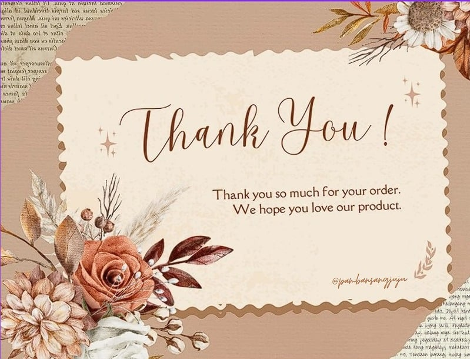
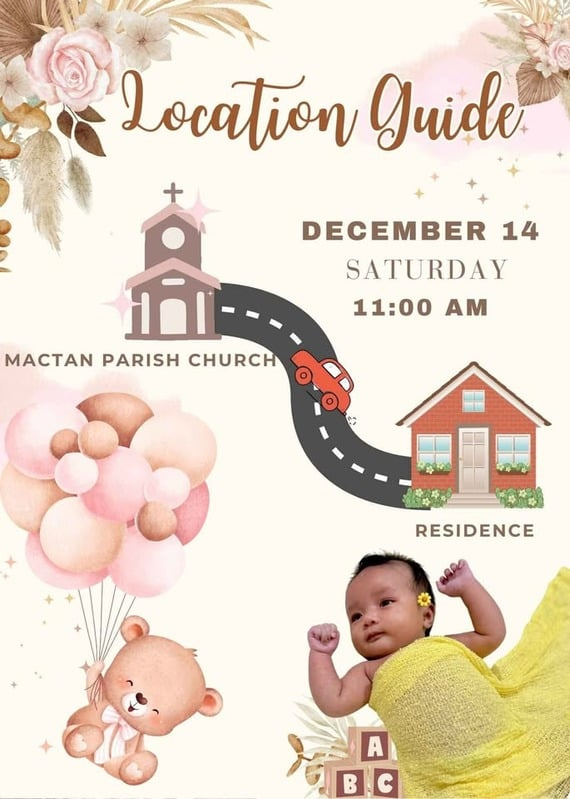
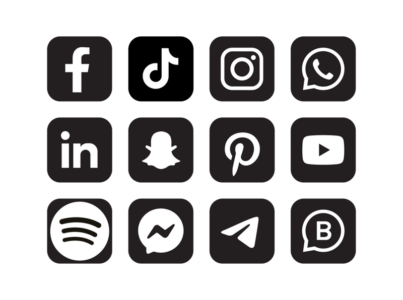
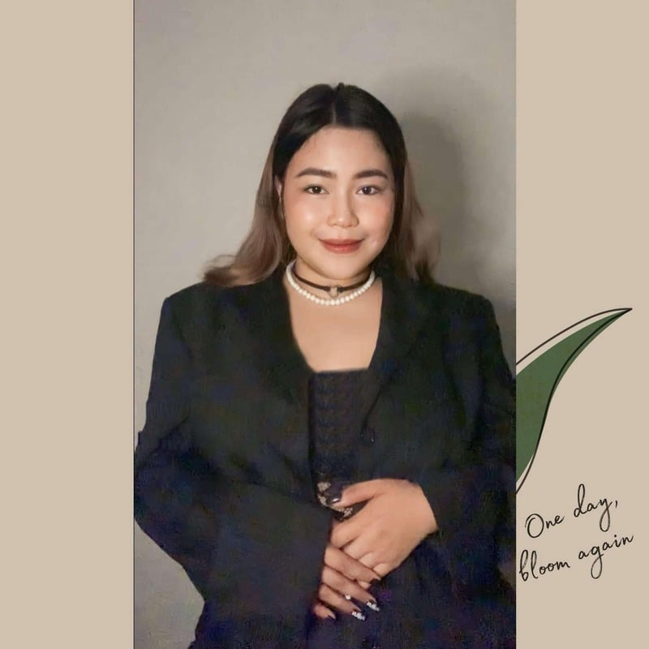

Creative & digital
Canva design, graphic design, video editing, brochures, business cards, invitations, busy books, ebook covers, and social media visuals.
THE JULINA ATELIER
Preparing the gallery…
CREATIVE DESIGN / VIRTUAL ASSISTANCE
Beautiful details for your brand. Reliable support for your day. I'm Julina—a creative collaborator and bilingual virtual assistant.


A selection from my creative world.01 / THE INTERACTIVE ATELIER
Step into the gallery. Select a frame to explore the work, or choose a room below.
The complete portfolio is available below.
Browse the workPrefer a simpler view? Every project, service, and résumé detail is also available below.
02 / SELECTED WORK
Invitations, brand identities, print details, and digital content—collected from my original portfolio.
03 / HOW I CAN HELP
A balance of visual creativity, administrative structure, and client communication.
Canva design, graphic design, video editing, brochures, business cards, invitations, busy books, ebook covers, and social media visuals.
Email, calendar, file and travel management; data entry, document organization, scheduling, executive support, and client follow-ups.
English–Spanish support, inbound and outbound communication, Lawmatics case documentation, consultation scheduling, Zendesk, email and chat support.


Julina Marie S. Urias · @pambansangjuju
04 / THE PERSON BEHIND THE WORK
I bring a creative eye and a practical mindset to the businesses I support. From Canva designs and organized spreadsheets to bilingual client conversations, I value clarity, empathy, and getting the details right.
My background spans legal intake, insurance, healthcare, customer service, and administrative support. That experience shapes how I work: proactively, carefully, and with respect for confidentiality.
Based in Novaliches, Quezon City, Metro Manila.
Explore my experience05 / AN INTERACTIVE RÉSUMÉ
7+ years of combined experience. Select a chapter to read more.
Download résumé06 / YOUR NEXT CHAPTER
Checking AI availability…
Responses may be imperfect. Confirm project scope directly with Julina.